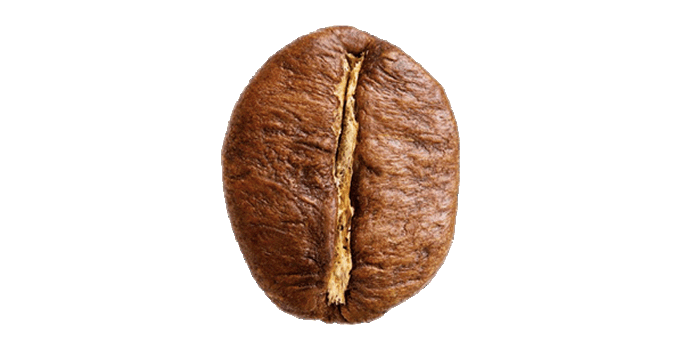

El grano de cafe arabica se caracteriza por ser unos de los mas apreciados en el mundo
al igual que todos los granos de cafe procede del arbol del cafeto, es originario de Etiopia y a dia de hoy es uno de los mas cultivados
se suele desarrollar en climas subtropicales, a una altura de entre 500-800 metros.
Por otro lado, el café arábica tiene una gran riqueza en aromas y sabores, que son los que definen cada variedad del café. Su sabor es suave, con notas frescas, frutales y florales y con un toque de acidez equilibrado. Evidentemente, estos matices dependerá de muchos factores como por ejemplo el agua, el grano y cualquier proceso involucrado en la preparación de una taza única.

Como hemos indicado, otro de los grandes grupos del grano del café es el robusta. Procede de la República Democrática del Congo y su semilla es mucho más resistente que la arabica por lo que acepta mayor variedad en los terrenos. El sabor del café robusta es más bien amargo y se combina con matices de frutos secos y madera. Asimismo, su textura es más áspera y cremosa, lo que lo hace poco atractivo para los gustos más finos e idónea para la elaboración de los cafés espressos.